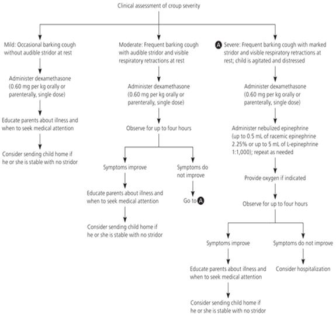

Croup (Acute Laryngotracheobronchitis)
Executive summary
Introduction
Croup is a common, primarily childhood, viral respiratory tract illness causing symptoms which may involve a harsh barking cough and (inspiratory) stridor. The vast majority of children with croup recover without consequences or sequelae; however, it can be life-threatening in young infants. Croup most often affects children aged 6 months to 3 years, with a peak incidence during the second year of life. However, children as young as 3 months of age, or adolescents and, very rarely, adults can be affected. The most common viral causes are parainfluenza viruses.
Target users
· Doctors
· Nurses
Target area of use
· Outpatient department
· Ward
Key areas of focus / New additions / Changes
This guideline addresses the management of croup in children.
Limitations
None
Presenting symptoms and signs
Croup usually begins with nonspecific respiratory symptoms (ie, rhinorrhoea, sore throat, cough). Fever is generally low grade and is present in 50% of cases.
Within 1 to 2 days, the characteristic signs of hoarseness, barking cough, and inspiratory stridor develop; often suddenly.
· Stridor is often worse on exertion.
· Variable degree of respiratory distress.
· Symptoms generally worse at night.
· Symptoms can last for 2 weeks but typically resolve within 3-7 days.
Westley croup score
Croup scores help clinicians in assessing the patient’s degree of respiratory compromise. The Westley score evaluates the severity of croup by assessing five factors: level of consciousness, cyanosis, stridor, air entry, and retractions. The point values given for each factor are listed below, and the final score sum has a range of 0 to 17.
|
Westley croup score |
|
|
Stridor |
None: 0 |
|
With agitation: +1 |
|
|
At rest: +2 |
|
|
Chest wall retractions |
None: 0 |
|
Mild: +1 |
|
|
Moderate: +2 |
|
|
Severe: +3 |
|
|
Cyanosis |
None: 0 |
|
With agitation: +4 |
|
|
At rest: +5 |
|
|
Level of consciousness |
Normal: 0 |
|
Disoriented: +5 |
|
|
Air entry |
Normal: 0 |
|
Decrease: +1 |
|
Score <2 – mild disease (occasional barking cough, hoarseness, no stridor at rest, mild or absent suprasternal or subcostal retractions)
Score 3-5: moderate disease (findings include frequent cough, audible stridor at rest, and visible retractions, but little distress or agitation)
Score 6-11: severe disease (patients present with prominent inspiratory, and occasionally expiratory stridor, frequent cough, marked chest wall retractions, decreased air entry on auscultation, significant distress and agitation.
A Westley score of ≥ 12 indicates impending respiratory failure; at this point, a barking cough and inspiratory stridor may no longer be prominent – it presents with lethargy, cyanosis and decreasing retractions.
Management
Taking a child with stridor outdoor into the cool air for 10 minutes can give him/her some relieve. Parent can be advised to do this. In addition, advise caregivers to have the child breathe warm moist air. This can be done by:
· running hot water in your shower with the bathroom door closed. After the bathroom becomes steamy, the parent can sit with the child in the room for about 10 minutes.
· Have the child breathe through a warm, wet washcloth lightly placed over the mouth and nose.
Treatment depends on the severity.
Mild disease:
· Give paracetamol (10-15 mg/kg TDS/QDS) or ibuprofen (5-10 mg/kg TDS) for fever
· Encourage adequate fluid intake
· Giving a single dose of oral dexamethasone 0.6mg/kg or prednisolone 1-2mg/kg may be of benefit.
· Send patient home
· Advised to return if symptoms worsen
In moderate to severe croup
· Admit to the ward
· Start oxygen therapy
· Give dexamethasone 0.6 mg/kg or prednisolone 1-2 mg/kg by mouth. Repeat dose after 12 hours if necessary
· Nebulised adrenaline (epinephrine) solution 1 in 1,000 (1 mg/mL) should be given with close clinical monitoring in a dose of 400 micrograms/kg (maximum 5 mg) repeated every 30 minutes if necessary.
· Monitor closely and send home when respiratory distress and stridor resolves.

References
Colledge, Nicki R., Brian R. Walker, Stuart Ralston, and Stanley Davidson. 2010. Davidson's principles and practice of medicine. Edinburgh: Churchill Livingstone/Elsevier.
Kliegman, Robert., et al. Nelson Textbook of Pediatrics. Edition 20. Phialdelphia, PA: Elsevier, 2016.
Management of acute respiratory diseases in the pediatric population. The role of oral corticosteroids. Italian Journal of Pediatrics 43(1). December 2017. Retrieved from https://www.researchgate.net/figure/Westley-croup-score_tbl7_315597265 on 25th February 2017.
Waseem M (2018). Otitis Media. Medscape. Retrieved from https://emedicine.medscape.com/article/994656-overview on 26th February, 2019
Standard Treatment Guidelines, 6th Edition, 2010. ISBN 978-9988-1-2538-7
Zoorob R et al (2011). Croup: An Overview. Retrieved from https://www.aafp.org/afp/2011/0501/p1067.html on 25th February, 2019.
|
Written by: |
Name: Fatoumata Sawaneh |
Date: 27 February 2019 |
|
Reviewed by: |
Name: Baderinwa Abatan |
Date: 3 May 2019 |
|
Version: |
Change history: |
Review due date: |
|
1.0 |
New document |
31 May 2021 |
|
Review Comments (if applicable) |
|
|